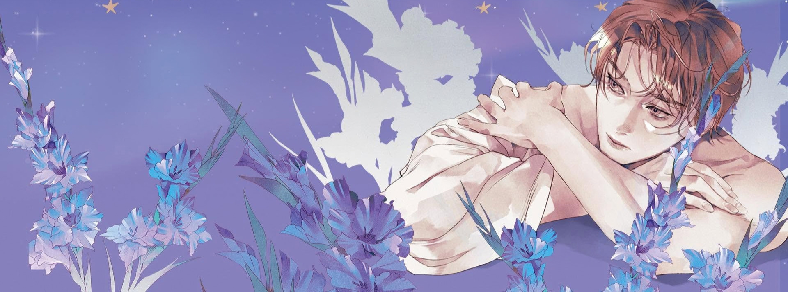
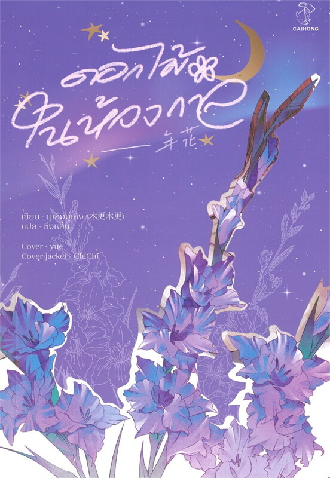

เมื่อดอกไม้ผลิบานผิดฤดู
แต่ความรักไม่เคยผิดเวลา
ดอกไม้ดอกหนึ่งเมื่อแย้มบาน เพียงไม่นานก็คงโรยรา แต่สำหรับเสิ่นลั่ว ดอกไม้ในหัวใจของเขายังคงแย้มบานนับจากวันนั้น สดใสงดงาม แม้เวลาจะผันผ่านนับสิบปี และยังคงรอคอยที่จะได้กลับมาอยู่เคียงข้างดอกไม้ดอกนั้นสักวันหนึ่ง
"15 ปี 2 เดือน 3 วันกับอีก 12 ชั่วโมง… เวลาที่พวกเราแยกจากกัน"
ดอกไม้ในห้วงกาล

เรื่อง ดอกไม้ในห้วงกาล (年花)
ผู้แต่ง มู่เกิงมู่เกิง (木更木更)
🌸 ผู้แปล ซิ่งหลัน
🌸 ปก yue
🌸 มี NC
❌ ไม่มี E-Book
❌ Trigger Warning ❌ : การถ่ายภาพนู้ด, Domestic Violence (การใช้ความรุนแรงในครอบครัว), Stalking (การสะกดรอยตาม)
15 ปี... นานพอที่จะทำให้อะไรหลายอย่างเปลี่ยนไป แต่นานพอหรือไม่ที่จะทำให้ความรู้สึกบางอย่างเลือนหายไปจากใจคนสองคน?
"ดอกไม้ในห้วงกาล" เล่าเรื่องการกลับมาพบกันอีกครั้งของ เสิ่นลั่ว หัวหน้าทีมจากองค์กรกำกับสถาบันการเงิน และ เซี่ยอีหยาง นายธนาคารหนุ่มรูปหล่อ อดีตเพื่อนสนิทสมัยมหาวิทยาลัยที่แยกจากกันไปนานถึง 15 ปี ด้วยพรหมลิขิตทางหน้าที่การงาน ทำให้ทั้งสองต้องกลับมาทำงานร่วมกันอีกครั้ง
เรื่องนี้จะไม่ซับซ้อน เดาทางได้ไม่ยาก และไม่ได้เล่าออกมาแบบดราม่าจัดเต็ม แต่กลับให้ความรู้สึกเหมือนได้นั่งดูคนสองคนค่อยๆ จีบกัน เรียบง่ายแต่ซ่อนความยึดติดเอาไว้ในทุกฉาก ทุกบท ความหนักหน่วงของเรื่องซ่อนอยู่ในอดีตบางส่วนของตัวละคร ซึ่งเป็นปมที่เกี่ยวกับ gender identity — สิ่งที่มู่เกิงมู่เกิงเลือกจะไม่ลงรายละเอียดมากนัก แต่ผู้อ่านกลับสัมผัสได้ชัดเจนว่าตัวละครต้องเผชิญกับอะไรมา
นี่คือจุดเด่นที่ทำให้นิยายเล่มนี้ต่างจากเรื่องอื่น — วิธีการเล่าที่ไม่ดึงอารมณ์ แต่กลับทำให้ความเจ็บปวดเด่นชัดที่สุด มู่เกิงมู่เกิงไม่เลือกที่จะลบเลือนความเจ็บปวดที่ตัวละครเผชิญ ไม่ปลอบประโลมด้วยการสร้างโลกสวย แต่เลือกที่จะปลอบประโลมด้วยความเป็นจริง ทำให้ทุกความรู้สึกที่ถ่ายทอดออกมามีน้ำหนักและความหมายมากยิ่งขึ้น
และท่ามกลางความเจ็บปวดที่ซ่อนอยู่ ความสัมพันธ์ของพระนายกลับให้ความรู้สึกอบอุ่น ราวกับได้ดูสองคนที่คุ้นเคยกันค่อยๆ หาทางกลับมาเจอกันอีกครั้ง ค่อยๆ สลายความคิดถึงที่สะสมมานาน และเยียวยากันทีละนิด — เป็นความหวานที่ไม่ได้โฉ่งฉ่าง แต่แทรกซึมและทำให้ยิ้มตามได้ทั้งเล่ม
สิ่งที่หนังสือเล่มนี้ทิ้งไว้ในใจ คือ กลิ่นอาย bittersweet เล็กๆ ที่ผสมผสานกันอย่างพอดี ระหว่างความขมของอดีตที่ผ่านมา และความหวานของปัจจุบันที่ทั้งสองได้ครอบครอง จนเมื่ออ่านจบ ความรู้สึกที่ค้างอยู่ในใจไม่ใช่ความเศร้าหรือความสุขล้วนๆ แต่เป็น มวลอุ่นๆ กลมๆ ที่ตกผลึกอยู่ในใจอย่างประหลาด
หากคุณกำลังมองหานิยายที่ไม่ต้องการความดราม่าจัดจ้าน แต่อยากสัมผัสความรู้สึกลึกซึ้งที่ค่อยๆ แทรกซึมเข้าไปในใจ พร้อมความหวานละมุนที่ทิ้งรอยยิ้มไว้ตลอดการอ่าน "ดอกไม้ในห้วงกาล" คือหนังสือที่ไม่ควรพลาดอย่างแท้จริง
จุดเด่นของเรื่อง
ปมชีวิตที่บาดลึก
เรื่องราวกล้าพูดถึงประเด็น Gender Identity อย่างเจ็บปวด ทั้งสองต้องก้าวข้ามทั้งความเจ็บปวดในใจตัวเองและกาลเวลาที่ผ่านไปนานถึง 15 ปี
ความสัมพันธ์พระนายที่ดีงาม
การได้กลับมาเจอกัน ใช้เวลาสลายความคิดถึง ค่อยๆ เยียวยากันทีละนิด เป็นความหวานที่อ่านแล้วยิ้มตามได้ทั้งเล่ม
สไตล์การเขียนที่ไม่เหมือนใคร
มู่เกิงมู่เกิงไม่ดึงอารมณ์ แต่กลับทำให้สัมผัสความเจ็บปวดเด่นชัดที่สุด ไม่ลบเลือนความเจ็บปวด แต่ปลอบประโลมด้วยความเป็นจริง